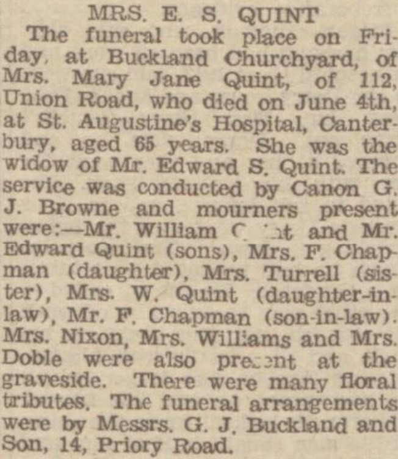

Mary Jane Quint (née Rolfe) 1884 - 1950
[ Home ] | [ Calendar ] | [ Surnames Index ] | [ Census Index ] | [ Family History ]A domestic general servant and the 4th of 7 children of James Rolfe (a coachman) and Elizabeth Waite, Mary Rolfe, the second cousin twice-removed on the father's side of Nigel Horne, was born in Hythe, Kent, England on Jun 21, 18841,2,3,4,5, was baptized in Cheriton, Kent, England on Aug 3, 1884 and married Edward Quint (a harbourman with whom she had 5 children: Edward James, Rose Mary, Beatrice May, Charles David and William Frederick) in Dover, Kent, England on Jun 26, 19096.
During her life, she was living at Cheriton Court in Cheriton on Apr 5, 18911; at Snargate Street in Dover on Mar 31, 19017; at Lansdowne Cottages, Union Road in Dover on Apr 2, 19118; and at 112 Union Road in Dover on Jun 19, 19212 and on Sep 29, 19393.
She died on Jun 4, 1950 at St Augustine's Hospital, Chartham, Kent5.
Parents
- James was born on Jan 13, 1853
- Elizabeth Serena was born in 1859
Children
- Edward James was born on Jun 7, 1910
- Rose Mary was born on Nov 1, 1911
- Beatrice May was born on Jun 7, 1913
- Charles David was born c. Aug 1916
- William Frederick was born on Dec 23, 1919
Citations
- 1891 England, Wales & Scotland Census - Findmypast (was age 6 and the daughter of the head of the household)
- 1921 Census Of England & Wales - Findmypast (was age 36 and the wife of the head of the household)
- 1939 Register - Findmypast (was the head of the household)
- England & Wales births 1837-2006 - Findmypast
- England & Wales deaths 1837-2007 - Findmypast
- England & Wales Marriages 1837-2005 - Findmypast
- 1901 England, Wales & Scotland Census - Findmypast (was age 16 and a servant in the household)
- 1911 Census for England & Wales - Findmypast (was age 28 and the wife of the head of the household)
Media
Dover Express - 9 Jun 1950

Dover Express - 16 Jun 1950

England & Wales births 1837-2006 - BMD/B/1884/3/AZ/000495/356
England Births & Baptisms 1538-1975 - R_885430481
1901 England, Wales & Scotland Census - GBC-1901-0005534299
England & Wales marriages 1837-2005 - BMD/M/1909/2/AZ/000331/147
1911 Census for England & Wales - GBC/1911/RG14/04613/0743/2
1939 Register - TNA/R39/1714/1714B/012/02
England & Wales deaths 1837-2007 - BMD/D/1950/2/AZ/000789/047
Family Tree

Generated by ged2site. Last updated on Jun 11, 2024